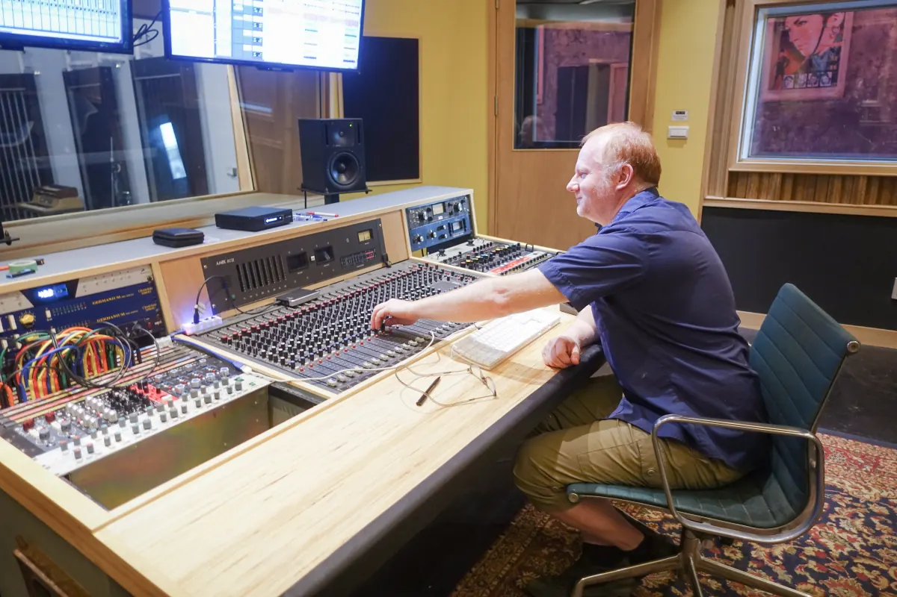
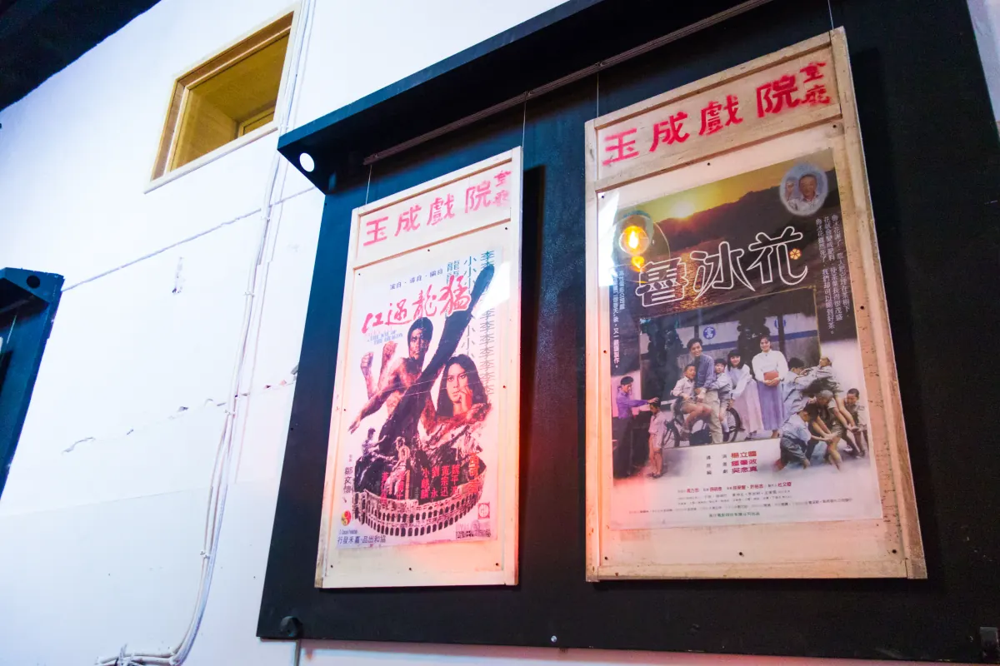
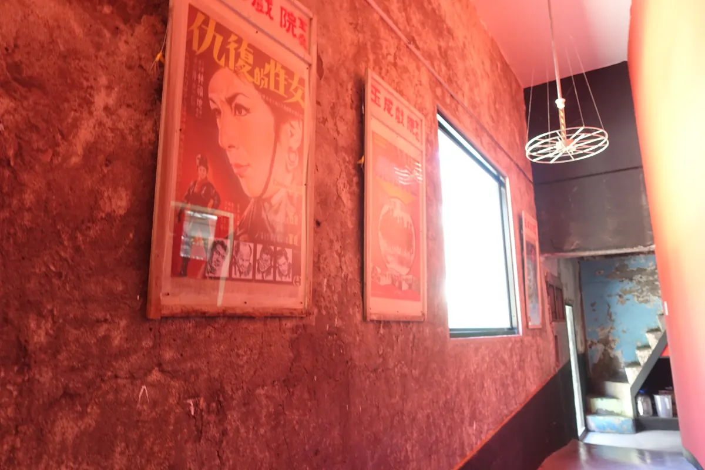
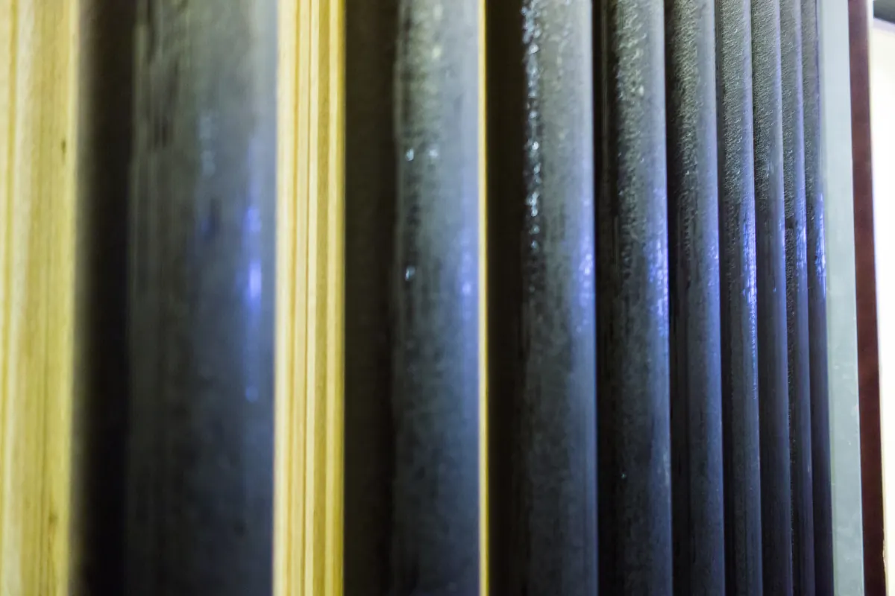
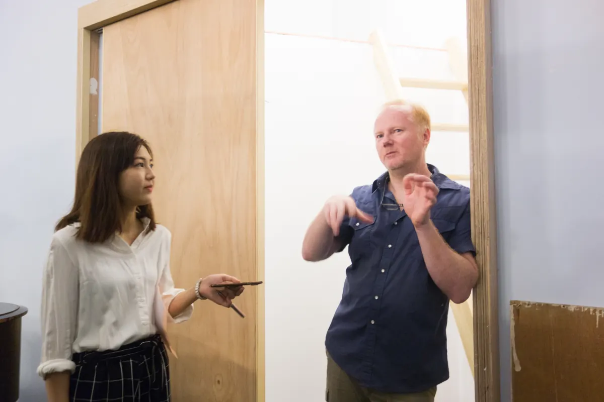
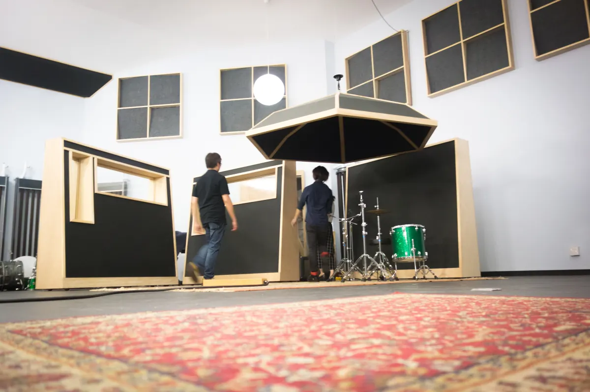
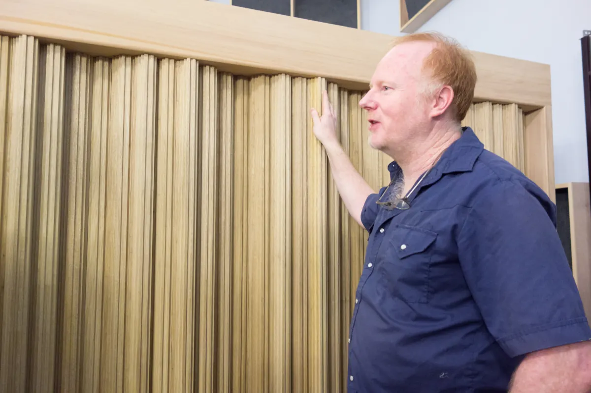
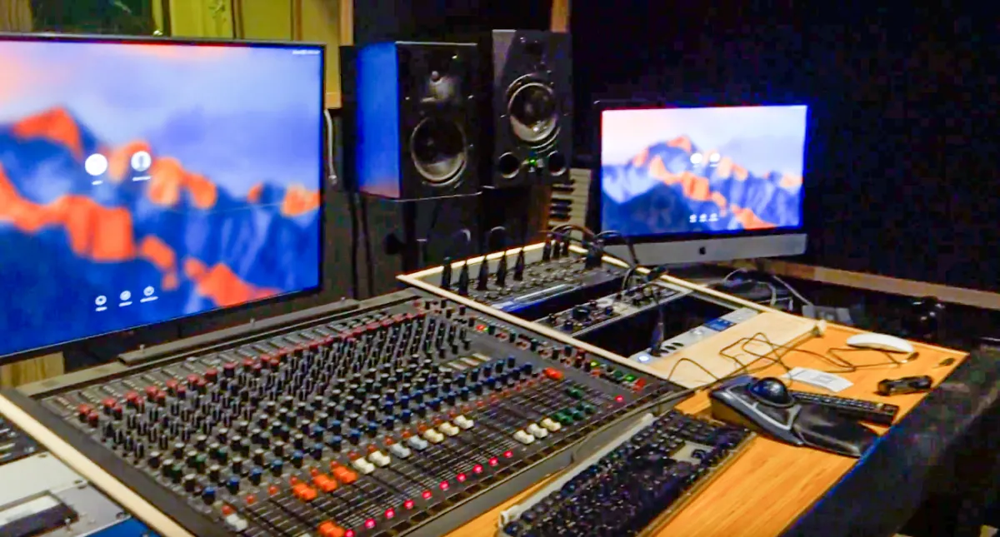
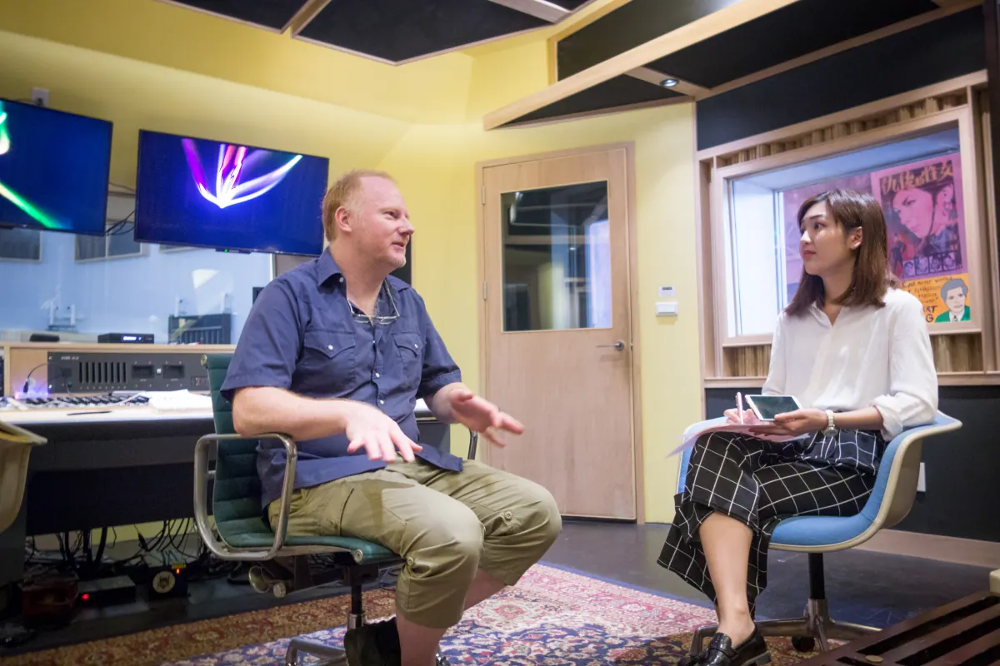
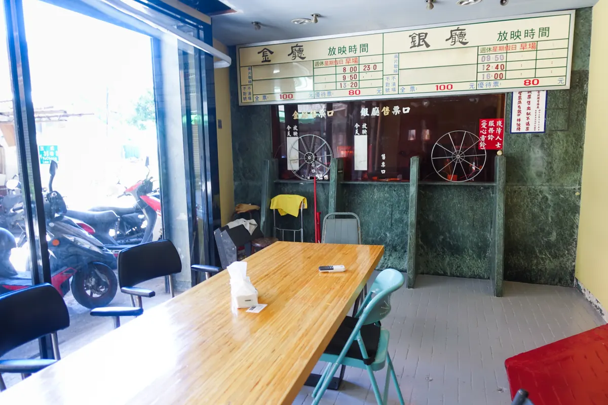

來自美國的 Andy Baker，至今移居台灣已有十年的時間了。介紹 Andy 的錄音室之前，我們先來聽聽 Andy 的驚人背景吧。從高中時期就已經很清楚自己想要當錄音工程師的 Andy，19歲就搬到Athens Georgia。這個城市雖然不大，但可以說是美國獨立樂團、Indie、New Wave 等多元音樂的盛地。很多一開始在這個城市錄音的樂團，如 The B-52’s，R.E.M，之後都成為全球知名的樂團。在這樣世界級的音樂環境中學習成長，Andy 在錄音和混音的經驗與技術已培養的相當成熟。後來自己在當地成立了個人錄音室，也曾幫許多美國的獨立音樂人從事錄音與混音工作，一路從事此行業至今。
「當時錄音相關學系的學費是一年兩萬多美金，我想不如把這筆錢投資在買錄音設備，直接開始錄音工作。」1992 那年，22歲的 Andy 成立了自己的第一家錄音室，27年後，對錄音工程的熱忱從來沒減少。「對我來說這像是一個沒有盡頭的挑戰。每個樂團的音樂聽起來都不一樣。而我的熱忱就在於如何讓他們錄出來的聲音是好的。」2007年來到台灣，從此喜歡上台灣，這一待就是十年。

Ｑ：蓋玉成戲院錄音室的原因？
Ａ：「一直到去年以前，我在台灣都有自己的混音室，在一個舊公寓裡。在那裡曾經混出非常多的專輯與單曲。越來越多人詢問是否能幫他們錄音，但是我不確定可以去什麼地方。通常在美國錄鼓聲會保留一些 Room Sound，那也是我喜歡的感覺，但是在台灣錄鼓的空間較小，沒有辦法達到 Room Sound 的自然感。經過幾次去不同家錄音室錄音的經驗，我發現台灣的錄音設備都很齊全沒問題，只是沒有遇到自己較偏好的空間設計，而空間也是影響聲音的一個關鍵因素。所以我開始買錄音室需要的器具，包括 console 等大型設備。直到去年，剛好在因緣際會下發現這個地方（指玉成戲院），才決定要在這裡蓋一座自己的錄音室。」
Ｑ：為何選擇這家舊戲院作為錄音室？
Ａ：「這個戲院其實就在我住的地方附近。四年的期間我每天出門都會經過這，但我從來不知道這裡以前是個戲劇院。剛好那陣子在找錄音室地點的時候，我心血來潮走到戲院門口探頭進去看了一下，發現是個舊電影院，但是都沒有人來了。我去附近的咖啡廳詢問，咖啡廳老闆幫我打聽後拿到了地主的聯絡方式，才知道戲院已經15年都沒有人進去過了。這幾乎可以說是一個命中註定的地點。至今我還是有點難以置信！」
Ｑ：建蓋錄音室的過程中，哪些事是讓你印象深刻或覺得最困難的？
Ａ：「建立一個完整的錄音室是個艱難的任務。去年(2016)五月的時候開始構圖，錄音室裡大大小小的東西全都是自己設計構想的。施工是整個過程中最具挑戰性的事情了。我中文很爛，一開始我都和工人用很破的中文溝通。（笑）例如屋頂挑高的設計。或在施工的某一天剛好遇到了颱風，屋頂開始漏水，導致其中一間房積水。那天真的是施工以來最糟的一天。因為這裡以前是戲院，地板是斜的，光是鋪水泥我們就花了一個多月的時間。」
Ｑ：想要在錄音的路上達到什麼樣的目標？
Ａ：「我想建立一個可以讓樂團現場同步演奏/錄音的空間，錄音室的空間設計和格局都是以這為主要考量點。現在樂團常見的錄音手法是一軌一軌分開錄製，但是這不但會花費很長的時間，而且音樂性會流失。所以我的規劃是讓吉他手在小的錄音室裡，透明的玻璃隔間讓吉他手可以看到另一間錄音室的鼓手，讓樂手之間進行眼神的交流，同時也可以經由監聽喇叭聽到整個樂團的聲音，但又不需要戴著耳機。這比較接近以前我在美國的做法。樂手們直接透過監聽喇叭彈，跟透過戴著耳機彈出來的效果會是不一樣的。監聽喇叭出來的聲音才是真正的聲音。所以這樣錄音的方式，一方面可以讓樂手彈得更樂在其中，另一方面是可以讓樂手聽到，且調出相對準確的 tone。在這樣情況下，通常我從 tracking room 聽到的已經是接近 final mix 的等級了。這是我錄樂團的最終目標。玉成戲院錄音室絕對是個很有趣，且獨一無二的地方。而身為錄音工程師，我最主要的訴求是要錄出好的聲音，和錄出對的感覺。」


Andy 邊和我們聊天，邊帶我們參觀錄音室。往錄音室走的路上，會經過一條貼滿老電影海報的走廊。陽光從側邊照進來，結合音樂又保留老戲院的元素，是個充滿藝術氣息的空間。進到主要的錄音空間時一定會讓你驚艷。空間大到可以塞下一整個合唱團或交響樂團都不為過。

進去錄音室後會看到很多黑色的管子在牆上。這些其實是來自日本的最新科技空調系統，目前全台灣還沒有錄音室使用這項設備。裡面是流動的冰水，既省電又不會產生任何影響到錄音品質的風聲。（編按：圖片中可以看到空調管的冷凝水）

錄音室的角落有一個小小的房間，原來那是 Andy 自己設計的 reverb chamber room。利用這個房間 Re-mic 可以創造極為自然的空間殘響。
「現在的時代不管錄 vocal 的設備或空間再好，大家都會再後製或 tune 過一遍，但是我一直很想要有一個空間是可以直接收到最真實的 reverb。所以通常會在這裡用音響播放已後製完的 vocal，然後 mic 這間房間去得到自然的空間感。蓋一個 reverb room 對我來說是一個很值得的開銷。只要能讓聲音聽起來更好，花多一點錢也無所謂，一個真實的空間殘響，與使用 Plug-in 是完全不同的意義。我想這就是熱忱吧。如果很在意一件事，就會盡我所能做到最好。」

在最大的錄音空間中，有個雨傘狀的木板，就是傳說中的「鼓傘」。Drumbrella 是一些美國的錄音室會使用的設備，只要站在傘下連講話聲音都會變很乾，是目前在台灣尚未見過的設計喲！
「錄鼓聲的時候，可以用旁邊這些吸音板 (GOBO) 環繞著鼓，達到較乾的聲音。如果不這麼做的話麥克風會錄到不必要的空間殘響 (reverb)。可以調整 Drumbrella 的上下高度，加上吸音板的擺放，將麥克風分別架設在板子內和外面，不但可以錄到房間(Room)的聲音，也可以錄到一份乾的 (dry sound)。所以在混音的時候就可以視情況調整兩者的比例。Drumbrella 和吸音板也是自己設計的。當時剛好遇到一名喜歡挑戰新事物的木匠師傅，讓師傅在手工製作這些設備的過程也很樂在其中。」

「關於這些擴散板 (Diffuser) 的設計與聲學效果，我查到關於它設計的資料。我們在台灣試著 DIY 這個設備，買了250片木片，花了幾個月的時間割木板。每一片木板都要割過四遍。我們花了很多的時間在這上面。沒有 Drumbrella 和這些 panel 的話，聲音會聽起來太「野」、太糊。以前在美國自己的錄音室有一個小的。有扇門和一道走廊，裡面的聲音其實是乾的。我會將麥克風擺在走廊，聲音非常棒。套用同樣的理論，現在也能夠利用這些器具和設計調整聲音。例如打小鼓邊 (rim shot) 的時候就特別好聽。它的乾度剛剛好，不會太長也不會太短，聽起來很自然。」

接著 Andy 帶我們參觀混音室，位於錄音室的另外一個角落。混音室裡面還有一個 vocal 錄音室。這是 Andy 平常進行混音的地方，裡面有很多 「古董級」的寶物。他從美國帶回來很多樂器，包括爵士鼓跟 organ。還有一些七〇年代的實體 effect 效果器。
「這支 echoplex 的 distortion 和 short delay 聽起來非常好聽，自然的盤帶壓縮可以避免數位 Delay 一直把音量疊加上去的問題。用來當作吉他 plug in 聽起來都會有更好的效果。」從 Andy 介紹器材的眼神，可以看出他的熱情。混音室後方還有一張看起來很舒服的沙發。「以後還會再買更多東西。音樂人都有這個問題。Never enough。」（笑）
Ｑ：如果一個樂團的所有樂手以同步錄音的方式錄製一首歌，後續要調整一些小地方會很難嗎？
Ａ: 「這要看情況。如果是電吉他通常都沒問題。曾經在大空間同時錄過 vocal、弦樂和吉他，當時都是利用吸音板的擺放，最後效果也很不錯。雖然是同時在一個大空間錄音，通常還是會盡可能將所有樂器的聲音都「隔離」的很乾淨，除非是有一個非常大聲的樂器。例如有次有 Djembe（非洲鼓），我就讓他在透明玻璃的小房間打 (指前文的吉他Tracking room)，就不會造成聲音錄進其他分軌的問題。現場錄音就是會讓整體的感覺不一樣。如果只是吉他手的部分有一些需要修改，還是可以只修吉他手那一軌的那個部分就好了。或是我們會回去同一個地方請大家都再彈一樣的地方，直到大家都滿意為止。上次來錄了一個台中的樂團，一天錄兩首。他們在錄音室四天，共錄了七首歌。其實這樣是很快的。」
Ｑ：什麼樣的音樂人適合來玉成戲院錄音室錄音？
Ａ：「因為我自己個人很喜歡後搖滾音樂，後搖滾樂團應該要錄現場才能錄到最自然的動態 (Dynamics)，就像爵士樂團一樣，樂手需要在彈奏的當下互相聆聽。所以其實什麼樣的音樂都可以來，只要是需要互動的音樂，都適合。像前陣子才錄過傳統樂的樂團，也是全部一起錄的。如果一個一個樂器分開錄就不像音樂了。對錄音師而言也是很麻煩的，每個人都會想要改很多的小地方。因為他們們錄的時候只聽得到自己的聲音。當你花了四小時錄兩分鐘的歌，還要修改很多地方，這會累死人的。如果都是這樣錄，我寧願在漢堡店工作。至今也還是滿多樂團這樣錄音的。但如果樂團事先練到完整後再進來一起同步錄音，其實是可以很快的。在美國的時候我曾幫一個後搖樂團在兩天內錄了十首歌，很輕鬆。他們準備好了，你就會錄得很輕鬆。但就算有一些細微不完美的地方，他們也覺得不用去修改，就讓它聽起來自然就好了。現在的人玩音樂想要所有的細節都是最完美的，但其實它原本的樣子就是最真實的。只要有對的 setup、樂團也都有充足的練習，Live recording 就不會是一件困難的事情。對樂團來說也是比較省時間省金錢的。尤其是在錄後搖滾的音樂時，如果要分軌錄音，吉他手可能是跟著節拍器在彈奏，但沒有和鼓手同時一起製造 dynamic。變成混音的過程我需要幫他們再調整大小聲，就會喪失一些自然的感覺。這種感覺應該要是團員們一起同時透過聲音的互動而出現的。這才是真正一起玩音樂的過程。」
Ｑ：有些樂團因考量到預算問題而不去錄音室錄製專輯，選擇自己錄音。你對這有什麼看法？
Ａ：「的確現在因為科技的進步很多音樂人或樂團都可以自己在家進行錄音，那也很好。但是如果是要發行一張專輯，就會覺得滿可惜不能一起去一間錄音室錄。我常覺得，沒有太多預算和錢的人反而能夠做出最好的音樂。我沒有什麼意見，但是我會建議這些樂團，如果他們練習地扎實，與其一軌一軌分開錄兩週甚至更長的時間，不如集中三天在錄音室錄完一整張專輯。這是很可行的。如果音樂本身是好聽的，其實錄音不需要到追求完美。在錄音室錄完樂手後再回家錄 vocal 也可以。」
Ｑ：Andy 身為 indie 和後搖滾的聽眾，在台灣這十年期間，對於台灣在獨立音樂領域的發展有什麼看法？
Ａ：「很不錯。而且有變得更好的現象。我最近因為經營錄音室的關係比較少去聽現場的音樂了，但是透過錄音室的工作也是持續地和樂團接觸，常常會和之前合作過的客戶再次合作。像《草東沒有派對》就是很棒的樂團。我曾擔任他們現場的 PA，也幫他們的專輯混音。未來很可能也會持續合作。這讓我很期待。今年的金曲獎是我看過最棒的，很高興看到他們得獎。我很喜歡有內容的作品。我也很喜歡甜梅號、MATZKA、Cicada、RANDOM隨性樂團。他們的音樂都很棒。」

Ｑ：未來會想要在玉成戲院錄音室有什麼其他嘗試嗎？
Ａ：「未來很想嘗試網路直播的表演。放幾張椅子，讓樂團們以高品質的音質演出。也希望能夠一個月一次，邀請一個樂團進來演奏兩到三首歌，配上在錄音室現場的影片，然後放在 YouTube 頻道上。如果品質都很好的話，二十年過後回來看，他們也會為此感到驕傲。運用影片和音樂紀錄一切，我覺得這很有意義。可能某些樂團之後會很紅。如果有一些影片可以先收錄，這也是滿珍貴的。或著是請現在知名的樂團進來表演，做一些合作的 project。有很多事情都是我很想嘗試的。」
Ｑ：對於經營錄音室有什麼期許？
Ａ：「我希望這裡可以吸引更多的錄音工程師，變成一個很多錄音工程師都喜歡來的地方。更多的錄音師就會有更多不同音樂類型的客群。我覺得這些都是很可行的。現在就是一步一步執行。我很希望可以鼓勵更多的人一起來玩音樂。在錄音室錄音的經驗對樂手也是一個很好的訓練，不論是技巧或樂手之間的溝通，都會變得更好。
另外一件我一直都很想做的是，讓台灣的吉他手對自己的 Tone 更加了解。現在比較常見的是，吉他手們去表演的時候，表演場地會提供類似的 amp，像是 Marshall、JCM、Fender 等。但是我在美國做音樂的環境中，看到的是所有的樂團都有自己的 amp。你可能會因為你用的 amp 調出某一種 tone 而寫出一首歌，但是如果換成是另一個 amp，寫出來的歌可能又是完全不一樣的。吉他手本來就會需要花非常多年的時間摸索屬於自己的 tone，找到自己適合的 amp。bass 手也一樣。如果平常這些 tone 跟音樂上的所有細節都做到了，到錄音室錄音時其實是可以很快速的。在很多的樂團音樂裡，吉他手的聲音可能就佔了六成，一名吉他手對自己 tone 有很深入的了解，對現場演出也會有很大的幫助。我常看到吉他手帶著一堆 pedal，發出很多滿不悅耳的聲音。我就會去建議他們不要用任何 pedal，可以加一點 reverb，但是不要用太多 distortion，試著去用 amp 調出來。整體聽起來會更和諧，不會聽起來像是飛機引擎聲。我希望可以從一個 DIY group 開始做起，會在錄音室裡放 guitar amp、麥克風，一個月一次一起討論。」
Ｑ：來台灣後為什麼會選擇留在台灣建錄音室？
Ａ：「2007年美國金融海嘯也影響到音樂產業。那時我工作量很多，但是房租也很貴。我的錄音室就是我的家，全部都是設備，只有一個小房間是我睡覺用的。我在那裡幫很多沒有錢的人錄音。現在有比較好一些。但是那時真的還滿慘的，很多樂團都沒有錢錄音，也沒有辦法賣專輯，整個獨立音樂市場都在往下滑。大的唱片公司當然不會選擇來小型的錄音室。我剛來台灣的時候本來是想要換個產業的，加上我已經做到買錄音設備成癮的程度。Ebay 太危險了。我現在並沒有想要回去美國。美國生活費很貴，錄音室也很競爭。吃個 bagel 早餐都要七塊美金。房租、保險、電話費等生活費都很貴。一開始來台灣其實並不是基於台灣的音樂環境。只是來了以後就喜歡上台灣了。台灣的生活輕鬆很多。」
Ｑ：剛來台灣時，對台灣的獨立音樂有什麼深刻的印象嗎？
Ａ：「我在美國接觸到的 indie 樂團在表演的時候幾乎都跟平常穿一樣的衣服，不會特別去精心打扮，只是認真彈奏音樂。沒有太多的行銷、外表的特效或影片製作，也不會有自己的化妝師。Marketing 跟音樂是兩個截然不同的東西。我在台灣有被這點嚇到。剛來到台灣時，我看到我朋友上台表演的時候頭髮弄的超誇張，穿中國風的衣服，我那時覺得很荒謬，跟他們平時根本是不同人。美國當然也有這樣的樂團，只是一直以來我都是和獨立音樂派的樂團工作，所以比較少接觸到這樣的（笑）。也許我在加州的話也會看到很多搭配形象的樂團。這不是美國跟台灣之間的差異，是我所接觸的樂團類型變得更多元。所以我開始感到很興奮。剛好一到台灣不久就有機會錄到當時執政黨的競選歌曲。後來也開始有和 Freddy、1976、滅火器等音樂人合作。覺得一切都很有趣。很多想去美國發展的人可能是抱持著外國的月亮比較圓的心態，但對我來說台灣真的很棒，獨立樂團們很有衝勁，像草東。很喜歡草東，表演都還是像平常一樣的自己，不會刻意添加任何音樂以外的效果。」
Ｑ：Andy 曾經跟很多獨立樂團合作。像草東得獎了。你在混音和錄音的秘訣是什麼？
Ａ：「草東的專輯本身就是好聽的，不是因為它的聲音品質。身為一名錄音工程師，我還是覺得聲音品質只是音樂的一部份而已。我不覺得是因為聲音品質的原因才讓那張專輯成名的，是音樂跟歌詞本身。如果是 demo 的話，說不定不會是最頂尖的，但是我覺得還是會有很好的迴響。我覺得音樂本身還是最重要的。我並不是讓他們得獎的關鍵，只是剛好那張專輯是我混的。我也混過很多樂團的音樂是我覺得很棒但是沒有得獎的。我看到草東的音樂已經有三百多萬的點閱率，以一個獨立樂團能做到這樣的成績，我覺得非常開心也很驚訝，但是我並不會覺得這是我的功勞。今年的金曲獎真的是我看過最棒的，不是只有商業化的音樂，評審真的是在以音樂做評比。草東得獎這件事幫非常多的獨立樂團『開門』，我相信會有更多像他們一樣有創意的音樂出現，歌詞產生共鳴，反映社會現象。」
(圖: 進行樂團錄音時， 這裡就是 Andy 的 Control Room）
Ｑ：Andy 還特地蓋了一個真實的 Reverb Room，混音時你是如何決定適當的效果？
Ａ：「看歌曲本身的意境，如果是80年代那種感覺，我就會以那個年代的混音效果為主。60年代的意境就會以復古的混音方式。我會試著去學習每個年代的聲音。如果是錄 acoustic，我就會保留更多的 real sound。」
Ｑ：有沒有想過，如果已經花了很多錢做出了 reverb room 或 Drumbrella，但是結果不如預期，那該怎麼辦？
Ａ：「我覺得這都是可以解決的。我還是很想在這錄音室嘗試更多不同的玩法。例如我們第一次完成 panel 的時候，拍個手會有四到五秒的迴響，比我想像中的還要糟。我們預算有限所以那時很緊張。我開始想該怎麼辦，於是慢慢將問題一個一個解決，調整到最滿意的程度。其他自製的設備也都是同樣的概念。在 YouTube 有 Drumbrella 影片，有個錄音工程師 tune 鼓時會和 Drumbrella 的高度做協調，直到找到最好聽的高度。我都看類似這樣的教學影片或資料一步一步學習。」

(圖: 玉成戲院錄音室櫃檯/大廳，仍保留老戲院的櫃檯和放映時間看板）
Ｑ：平時會如何跟客戶溝通時會有語言隔閡嗎？
Ａ：「通常樂團都會有其中一個人會說英文。我用中文聊天可以。錄音的關鍵字，如從頭、再一次、低頻太多、太高，這些都沒問題。」（笑）
Ｑ：從事27年的錄音工程師/混音師，你從工作中得到最大的樂趣與動力是什麼？
Ａ：「我一直都持有一樣的理念。就是不斷地挑戰，不斷地增進。對我來說，如果我做出好聽的聲音，或讓一首歌聽起來是好的，那就是我做這份工作的喜悅。但是這不是簡單的事。過了這麼多年，還是覺得是很有挑戰性，所以需要不斷地進步。我喜歡讓樂團們進來錄音的時候都是很放鬆很樂在其中。有時候會看到來錄音的人很緊張很嚴肅，我都會試著開開玩笑讓他們放鬆。錄音應該要是跟你在練習的時候一樣自在的狀態，不要把錄音室當作診所。」（笑）
小編後記：
小編在溫哥華住了很多年，覺得在 Andy 這邊錄音，很像是在北美錄音的感覺：可以在輕鬆又富特色的環境下，享受錄音的過程，一起完成一張具有溫度的專輯。為了自己的熱忱與初衷，不管遇到多少挑戰他都會一個一個去解決，錄音和混音技術上的學習，30年來也從未間斷過。看完這篇專訪，是不是跟小編一樣敬佩 Andy 呢？想錄製專輯的樂團朋友們還在等什麼，快來這裡看看 → 玉成戲院錄音室臉書粉絲頁